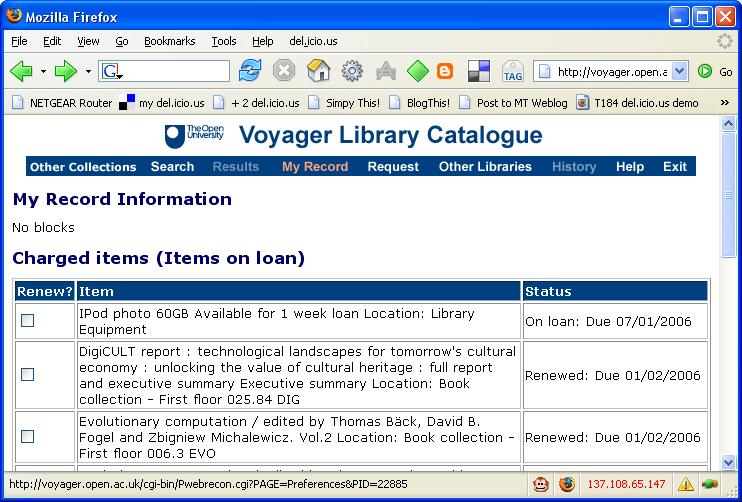

Two or three weeks ago, the OU Library announced that they were going to start an experimental loans programme for techie toys - iPods, PSPs, and so on - although they have a more grown up name for the project: the mobile and gaming technologies pilot project.
So earlier this week I popped along to the Library to find out more about this project, and found myself leaving with an iPod, which I've never handled before (the PSP's battery had run down and the recharging cable was nowhere to be found..!).

As the Library are looking at ways we can use these technologies to support our HE distance education courses, the iPod came with a selection of education related podcasts, some audio snippets from OU courses, and a few images.
(Hopefully, we'll get some of our Blue Peter robot designs distributed that way (when we eventually get the full database of 32, 000 scanned images onliine, that is) and perhaps some of the other images from our Robot Gallery.)
As I have a 3 hour trip home from the OU, I thought I'd pop a few IT Conversations I hadn't got round to listening to onto the iPod for the journey home.
So - Problem 1:
I only had an old, old, old version on iTunes on my office PC, so thought I'd better do an upgrade. Visiting the iTunes site, the panel/frame that provides the download link on the iTunes download page wouldn't load - some firewall problem perhaps?
And Solution 1(?): could a recent iTunes installer be provided on the iPod as portable-memory-drive as a default? This would require the iPod to be recognised as a USB?plugin memory device, of course.
Anyway, rather than fight the internet, I thought I'd resolve the issue (of not having a current version of iTunes) by using my laptop, instead. This is after all the machine I'm likely to connect the iPod to most frequently, and I can use it to connect the enterprise public wireless network, which means if there was firewall problem, I can get round it.
So I now have iTunes...
(You'll note that I was assuming that I have to use iTunes - there was no manual as part of the loan (not that' I'd have read it anyway...).
When iTunes first started, I was offered the chance to scan my hard drive for files to add to the Library. Shall I do that - err, no - perhaps not - I have no idea what sort of junk maybe added. I did however drag a few items into the Library. The iPod at this time was not connected...
I also subscribed to a podcast or two (can you grab an OPML file to do this more efficiently?), though I don't recall if this worked properly or not...
For why? Well, to establish web access through the enterprise/public wireless network I need to have a proxy set up in my Firefox settings. Firefox seems to cope with this automatically, according whether I'm at work or at home. Certainly when I tried to access the iStore from iTunes when I got home, I was unable to at first ("Firefox works so why doesn't iTunes???Arrrgggghhhh..." etc.) because I had IE (which I don't use) set to go via the OU public wireless proxy... I don't remember if I had to set up IE to go via the proxy when I was setting up iTunes at work... (Hmm - perhaps this was the problem with the desktop machine, where I also use Firefox?)
Anyway - I have some content in my iTunes Library, I'm subscribed to a couple of podcasts, now for plugging in the iPod.
There are two things I remember about this:
So - Problem 2: if I delete all the OU provided content shipped on the iPod when I'm first trying to get to grips with it (by randomly clicking everything, it has to be admitted;-) how do I get it back?
Answer 2(?) - provide an RSS/podcast feed from a project page on the Library website that contains this default content.
At least now I have some stuff I know I want to listen to on the iPod for the journey home...
However, my car is an old one with just a radio and cassette deck - so I need a cassette adapter to replace to headphones - good job we have an all-singing, all-dancing Tesco nearby... (the adapter was about 4 quid I think, and with a bit of forcing goes into the iPod carry case...)
Anyway - the journey was a pleasant one, the iPod played through the tracks without my intervention, and it seems perfectly usable...
...except, perhaps, for the following (and I'll perhaps return to these in more detail in a future post):
And here are some more thoughts - from a quick play last night and to which I will return again:
When I tried a single date in the calendar it worked, when I tried a few it didn't...ho hum - one for when I have a bit more time perhaps...anyway - on the iPod, the successful single entry trial seemed to be delivered via a new option in the iPod Calendar menu, so this looks promising for delivering separate calendars for each and every course a student is subscribed to perhaps? (See the Microinfo page for hints as to what sort of calendar info may be appropriately delivered. Again, I'll blog that properly when I get a spare couple of hours.)
And to finish, here's a silly idea for much later: can we deliver course news to students via the iPod? e.g. by providing a computer voiced reading of course news, or a calendar entry that pops up an alert timed at 1-2 minutes after the student has synched their iPod to their course home page? Should 'useful references/course related books' be made available as notes for the iPod...?
Posted by ajh59 at December 9, 2005 01:21 PMBuy an Apple computer and use iPod as it is intended.
I you think iTunes is bad you should have tried Music Match (or rather mismatch) which is what PC users had to use with early iPods once Apple agreed to let PC users attach then at all.
I have no problems except do take care when connecting to other computers as iPods contents will be erased. They are not music transfer devices.
Richard.
Posted by: Richard Seaton at December 9, 2005 02:16 PM